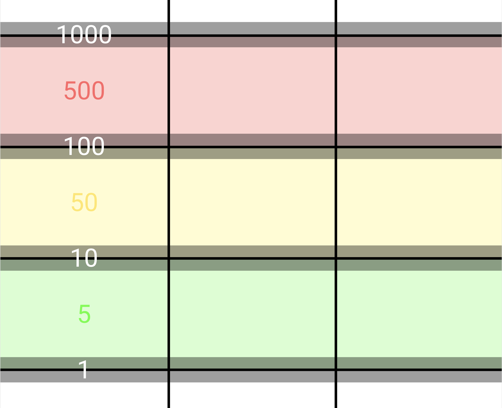
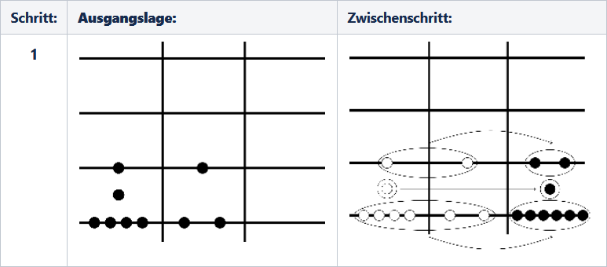
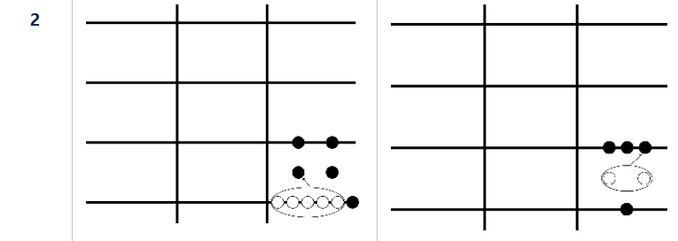
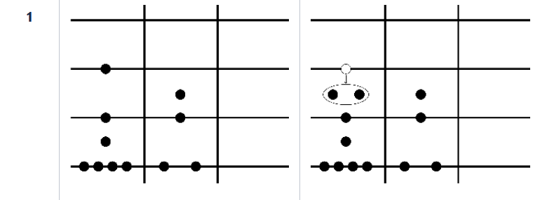

Inbetriebnahme
Wertebereich
Addition
Alle Rechenpfennige werden aus dem ersten und zweiten Feld in das Ergebnisfeld verschoben. Jeder Rechenpfennig bleibt dabei auf seiner Linie oder in seinem Zwischenraum liegen. Eventuell sind im Ergebnisfeld Rechenpfennige höherzulegen, da maximal 5 Rechenpfennige pro Spalte auf der Linie / Zwischenraum liegen können. Die Reihenfolge, in der Rechenpfennige höhergelegt werden, ist unerheblich.
Beispiel: 19 + 12 = 31
Beide Zahlen werden als erstes in die erste und zweite Spalte gelegt. Nun können alle Rechenpfennige welche sich auf der gleichen Linie oder sich im gleichen Zwischenraum befinden in die rechte Spalte verschoben werden.
Nun kann theoretisch schon das Endresultat aus der rechten Spalte abgelesen werden. Um allerdings die Lesbarkeit zu verbessern wird in den nächsten Schritten das Endresultat jeweils vereinfacht. Hier können fünf Rechenpfennige (weiss markiert) welche sich auf der 1er-Linie befinden durch einen Rechenpfennig im 5er-Zwischenraum ersetzt werden. In einem nächsten Schritt können die beiden Rechenpfennige, welche sich nun im 5er-Zwischenraum befinden durch einen zusätzlichen Rechenpfennig auf der 10er-Linie ersetzt werden.
Das vereinfachte Endresultat kann nun aus der rechten Spalte abgelesen werden.
Subtraktion
Nacheinander werden alle Rechenpfennige aus dem zweiten Feld weggenommen. Jedes Mal, wenn aus dem zweiten Feld ein Rechenpfennig weggenommen wird, ist auch ein Rechenpfennig aus dem ersten Feld wegzunehmen. Beide Rechenpfennige müssen auf der gleichen Linie oder im gleichen Zwischenraum liegen. Liegen noch Rechenpfennige im zweiten Feld und sind die jeweiligen Linien und Zwischenräume im ersten Feld leer, so sind im ersten Feld Rechenpfennige tieferzulegen.
Beispiel: 119 - 62 = 57
Beide Zahlen werden als erstes in die erste und zweite Spalte gelegt. Da zu Beginn im Zwischenraum, auf Höhe des obersten Rechenpfennigs der zweiten Spalte, kein Rechenpfennig vorhanden ist muss der eins höher liegende Rechenpfennig (weiss markiert) tiefer gelegt werden. Dazu werden zwei Rechenpfennige in den 50er-Zwischenraum gelegt. Der Rechenpfennig auf der 100er-Linie kann entfernt werden.

Nun wird jedes Mal, wenn aus der zweiten Spalte ein Rechenpfennig entfernt wird, auch ein Rechenpfennig aus dem ersten Feld entfernt. Beide Rechenpfennige müssen dazu auf der gleichen Linie oder im gleichen Zwischenraum liegen. Dies wird so lange gemacht, bis sich keine Rechenpfennige mehr in der zweiten Spalte befinden. Das Endresultat kann nun in der linken Spalte abgelesen werden.